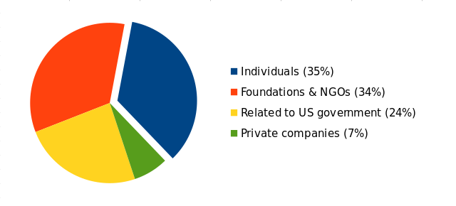

Jeden Tag hilft Tails tausenden von Leuten ihren Computer online und offline sicher zu nutzen.
Tails ist kostenlos, weil wir denken, dass niemand dafür bezahlen sollte, um vor Überwachung und Zensur geschützt zu sein.
Tails ist freie Software, denn wenn unser Sourcecode geheim wäre, gäbe es keinen Weg zu bestätigen, dass dieser sicher ist.
Heutzutage ist es die wirtschaftlichste Strategie im Internet sich auf Werbung und Tracking zu verlassen. Aber eines unserer Ziele ist es auch Euch vor gezielter Werbung zu schützen und wir wollen uns klarerweise nicht auf solche Einnahmequellen verlassen.
Die Zahl der Menschen die Tails nutzen wächst konstant genauso wie auch unsere Verantwortung ein so einfaches und sicheres Werkzeug wie möglich bereit zu stellen. In 2019 wollen wir die Installation, Aktualisierung und Nutzung von Tails reibungsloser gestalten und noch mehr Sicherheitsschutz einarbeiten.
Tails bereit zu stellen kostet uns jährlich rund 200 000€. Das nicht viel angesichts all der geleisteten Arbeit und viele von uns machen zusätzlich zu bezahlten Stunden noch Arbeit für umsonst.
Unser Geld kommt von:
- Leidenschaftliche Leuten wie Sie - Private Unternehmen wie Mozilla, DuckDuckGo oder Lush - Stiftungen und Nichtregierungsorganisationen wie die Handshake Foundation oder das ISC Project - Gelder von der US-Regierung wie der Open Technology Fund

Wir hören oft Beschwerden über Software-Projekte, die gegen Überwachung ankämpfen, wie Tor und Tails, und Gelder von der US-Regierung bekommen. Wir teilen diese Sorge, und wir werden niemals beruhigt sein, solange das Wohlergehen unseres Projekts von einer solchen Finanzierung abhängt.
Das ist warum es so wichtig ist von Nutzern und Nutzerinnen wie Ihnen finanziert zu werden und unsere Unabhängigkeit durch Ihre Spenden zu schützen.
From anonymized statistics, we know that Tails is used more than 20 000 times every day. If each user gave $6, our fundraiser would be done in one day. The price of a USB stick is all we need.
Aber wir wissen, dass die Leute, die Tails am meisten brauchen nicht spenden können, weil sie für die Unterstützung von einem Anti-Überwachungswerkzeug wie Tails Probleme bekommen würden, oder einfach, weil sie nicht das Geld dazu haben.
Letztes Jahr haben wir 1 167 Spenden erhalten, was insgesamt 101 644€ entspricht. Dieses Jahr streben wir 120 000€ an und eine größere Anzahl an Spendern und Spenderinnen.
Bitte überlegen Sie sich eine Minute Zeit zu nehmen, um heute noch an Tails zu spenden.